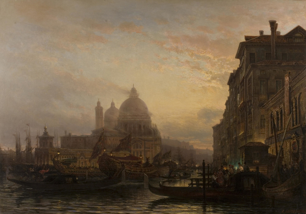

Боголюбов многие годы своей жизни провел в путешествиях по Европе. В 1854 году художник отправился в командировку,
обосновавшись в Риме. При этом он много ездил в Палермо, Сорренто, Венецию. В 1856 году Боголюбов написал несколько видов Венеции.
Картина исполнена в академической стилистике, на что указывают чередование планов, низкий горизонт, характерная игра с эффектами освещения.
Картина, по мнению искусствоведов, слишком канонична, ей не хватает живой жизни. Тем не менее картина завораживает.